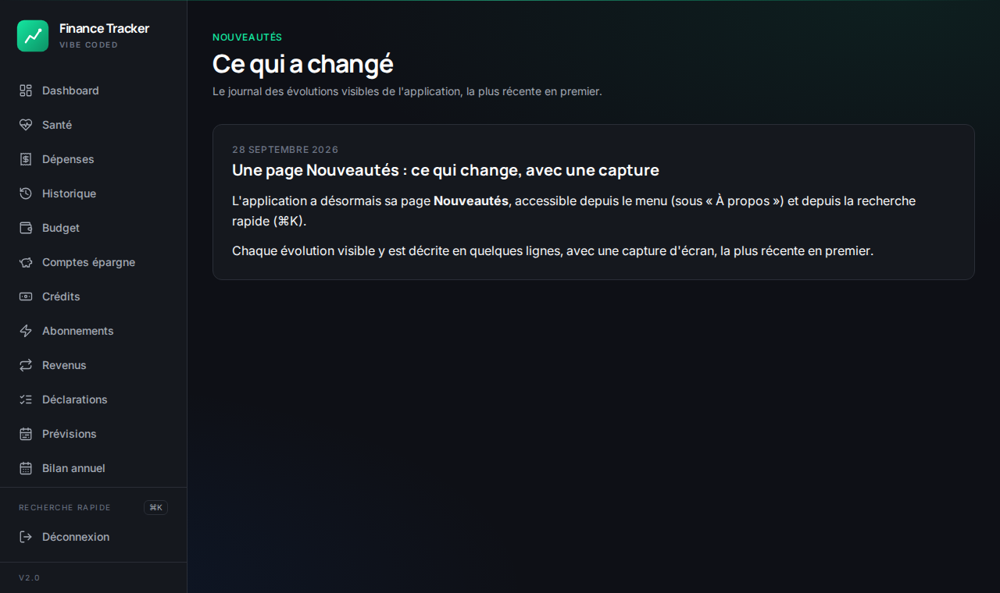

Une page Nouveautés : ce qui change, avec une capture
L'application a désormais sa page Nouveautés, accessible en bas du menu, juste au-dessus d'« À propos », et depuis la recherche rapide (⌘K).
Chaque évolution visible y est décrite en quelques lignes, avec une capture d'écran, la plus récente en premier.
